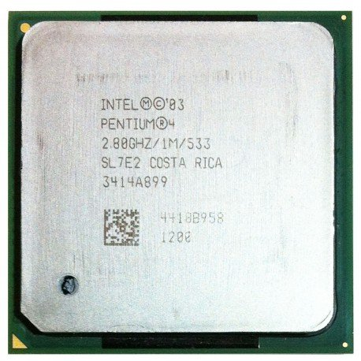

L'amélioration des processeurs entre 2000 et 2021
Cette page a un but explicatif, pour montrer comment les processeurs ont pu être améliorés sur 21 années.
Le microprocesseur, aussi appelé processeur, est le centre de commande et le calculateur électronique de l'ordinateur.
Leur taille qui est devenue de plus en plus petite au au cours de temps, a permis de créer des ordinateurs plus compacts. Il est constitué d'un circuit intégré gravé sur une minuscule pièce de silicium qui réunit des centaines de milliers de composants électroniques différents.
Voici un exemple de processeur de la marque INTEL
Mais alors qu'elles sont les différences entre un processeur de nouvelle génération et les anciens ?
| Les processeurs INTEL | |
|---|---|
| Ancienne génération | Nouvelle génération |
|  Le INTEL pentium 4 | Le INTEL Core I9 10900K |
|
Les caractéristiques : Nombre de cœurs : 1 Fréquence de base : 2,80GHz Finesse de gravure : 130nm |
Les caractéristiques : Nombre de cœurs : 10 Fréquence de base : 3,70GHz Finesse de gravure : 14nm |
|
En conclusion : Nous pouvons constater trois choses sur les processeurs INTEL :
|
|
Voici un exemple de processeur de la marque AMD
| Les processeurs AMD | |
|---|---|
| Ancienne génération | Nouvelle génération |
| AMD athlon 64FX | AMD Ryzen9 5950X |
|
Les caractéristiques : Nombre de cœurs : 2 Fréquence de base : 2,8GHz |
Les caractéristiques : Nombre de cœurs : 16 Fréquence de base : 3,4GHz Finesse de gravure : 7nm |
|
En conclusion : Nous pouvons constater deux choses sur les processeurs AMD :
|
|